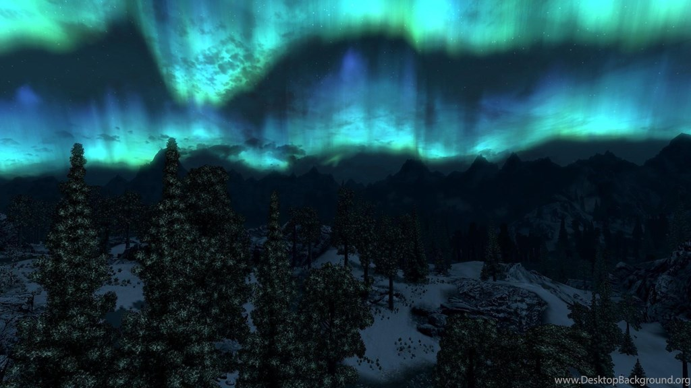
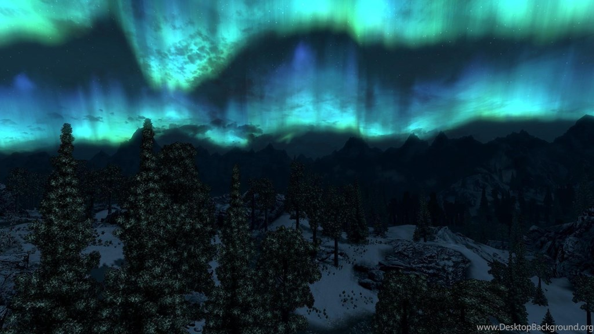
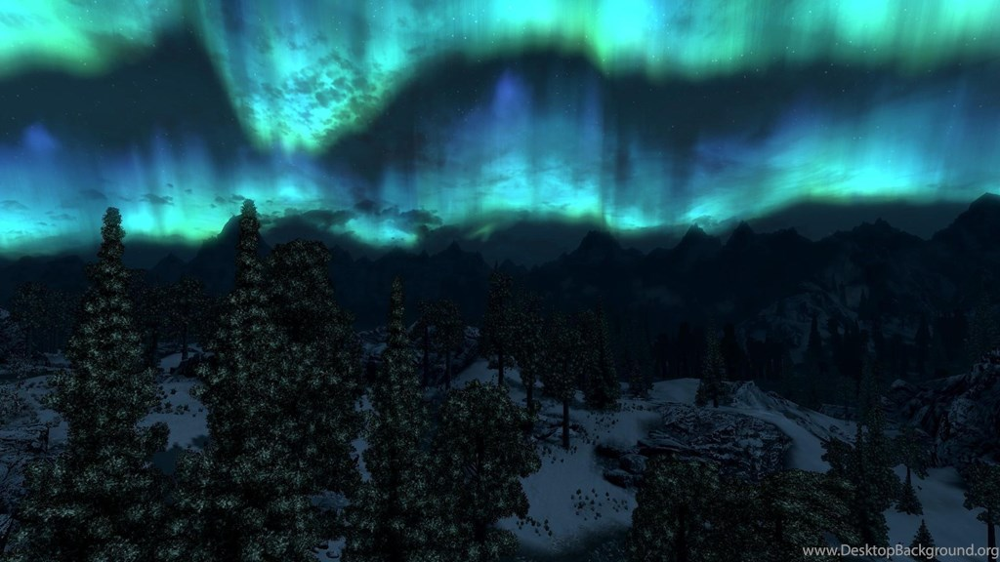
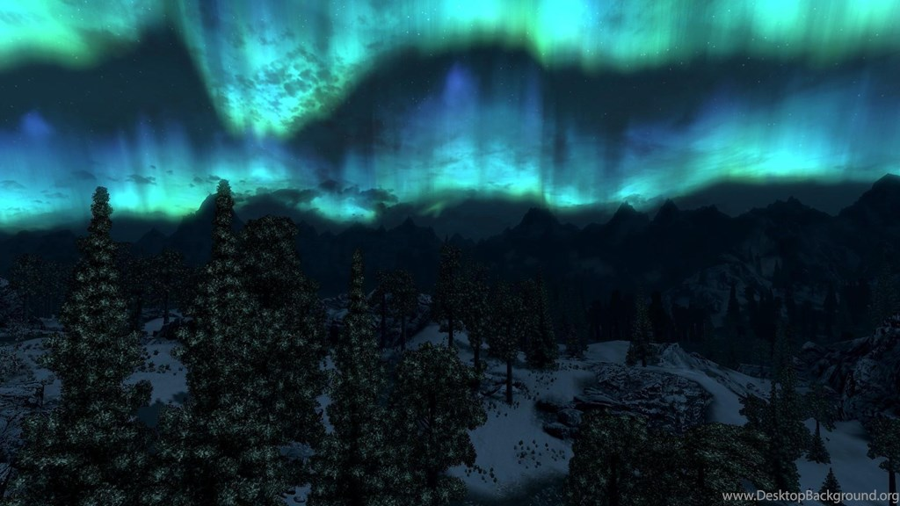

The Elder Scrolls V : Skyrim es un videojuego de rol de acción del tipo mundo abierto desarrollado por Bethesda Game Studios y publicado por Bethesda Softworks. Es la quinta entrega de videojuegos de acción y fantasía de la serie The Elder Scrolls y es posterior a The Elder Scrolls IV: Oblivion y predecesor de The Elder Scrolls Online. Skyrim salió a la venta el 11 de noviembre de 2011 para las plataformas: Microsoft Windows, Xbox 360 y PlayStation 3. El 26 de julio de 2012 fueron lanzados al mercado tres expansiones que son descargables: Dawnguard, Hearthfire y Dragonborn. El 28 de octubre de 2016 fue lanzada una remasterización llamada: Skyrim Special Edition HD. Esta incluye el juego original y los complementos, así como nuevas características: gráficos y efectos renovados.
-Spend the entire day setting up mods -Launch game -Instantly crashes ahhh.. just like I remember it.
-I understand why there are certain users giving this version of skyrim a thumbs down, due to bethesda's... bad decisions here and there... suffice to say. However, I feel that those users are purely giving a review on the company itself, rather than the actual game. But, I do understand where those people are coming from. Still, instead of only ranting how evil bethesda is, I'll talk about some of the positives about this particular version of skyrim... and also about the negatives that come with this version and what bethesda should have done better or left out entirely, don't worry there aren't too many negatives, but there are still negatives that need to be addressed.